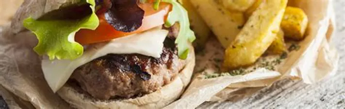

Easy burger Recipe

Description
You'll want to first gather all of your ingredients. The process goes
quickly, so having everything prepped and ready is best.
y seasoning and layering flavor all throughout, his recipe truly results
in a delicious burger."
Long gone are the days of the simple beef patty topped with mustard,
ketchup, and maybe a piece of iceberg lettuce. Burgers are being taken to
a whole new level by restaurateurs, professional cooks, and home cooks
alike.
Ingredients
- two pounds of ground beef
- two eggs
- four brioche hamburger buns
- six ounces of Monterey jack cheese
- one large tomato
- one large onion, four large leaves of lettuce
- butter
Steps
-
add all of the ground beef into a large bowl. Use a large wooden spoon
to break up all of the ground beef, and then add in the eggs
-
You'll want to mix in the eggs until they're fully incorporated to bring
the ground beef mixture together.
-
"The eggs help to bind the beef and will keep your burgers held together
while cooking," says Marshall. "There's no need to add seasoning to the
mixture at this step. That will come just before grilling."
-
irst, divide up the ground beef mixture into four even portions, and
then roll each section into a ball.
-
Add chunks of the cheese into the middle of the patty, and then work the
meat to cover the cheese.
-
You'll want to remove the skin from the onion and slice it into thick
slices. Slice the tomato into thick slices to use as a topping for your
burger. Break up the leaf lettuce if needed. Use this time to mix
together the mayonnaise and Dijon mustard in a small bowl.
-
Before you're ready to grill for Gordon Ramsay's burger recipe with a
twist, turn your grill on high to allow it to fully heat up.
- Lastly, add another small dollop of the mayo-mustard mixture.
-
Brush the butter over top of each burger to add an additional layer of
flavor. Generously baste each side to fully coat them.